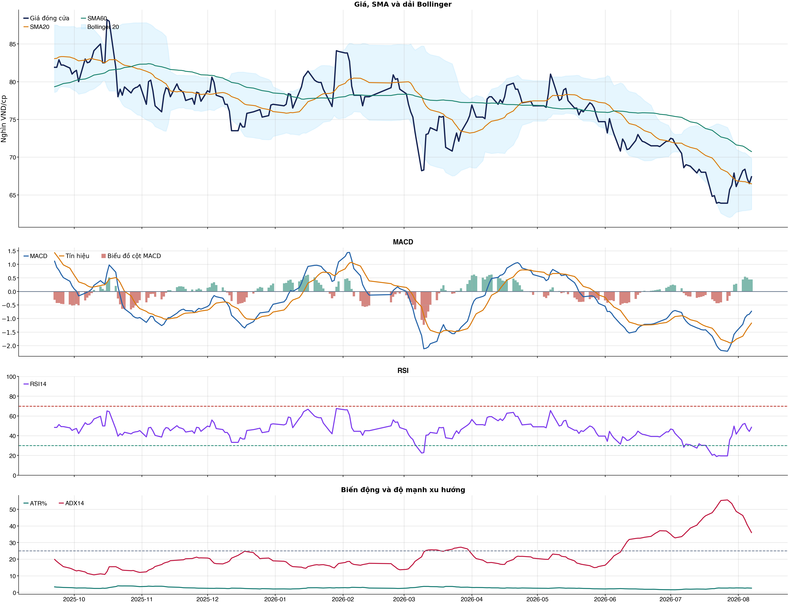
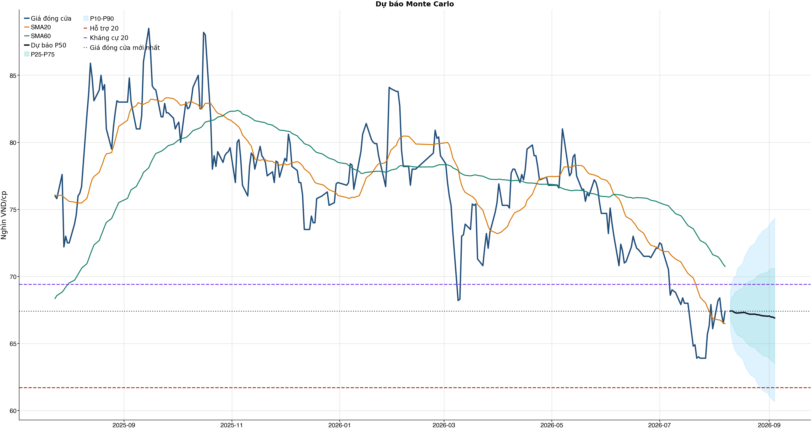
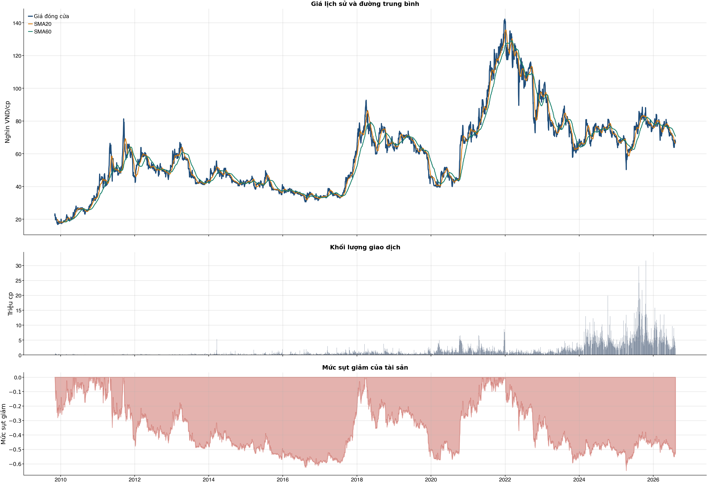

Kết quả chính
Tổng quan cơ bản
Biểu đồ kỹ thuật

Tín hiệu kỹ thuật
| Xu hướng | Cẩn thận | Giá nằm dưới SMA60. |
| MACD | Tích cực | MACD trên signal, histogram dương. |
| RSI14 | Trung tính | RSI 48.5. |
| Bollinger | Ổn định | Giá nằm trong dải Bollinger. |
| ADX | Xu hướng giảm | ADX 36.0, -DI vượt +DI. |
| Thanh khoản | Bình thường | 0.75 lần trung bình. |
| Stochastic | Hồi phục | %K nằm trên %D. |
So sánh mô hình
| XGBoost | 0.498 | AUC 0.493 |
| Logistic | 0.500 | AUC 0.512 |
| Đa số | 0.500 | Mốc so sánh |
Kiểm thử chiến lược ngoài mẫu sau chi phí
| Lợi nhuận ròng | -15.4% | 650 quan sát ngoài mẫu |
| Sharpe | -1.33 | Sau chi phí |
| Mức sụt giảm tối đa | -18.3% | 17 vòng giao dịch |
| Chi phí giả định | 50.0 bps | Một vòng mua và bán |
Mức độ quan trọng của đặc trưng
| close_vs_sma20 | 17.87 | Mức đóng góp |
| volume_z_20 | 14.73 | Mức đóng góp |
| relative_strength_20d | 14.42 | Mức đóng góp |
| atr_pct_14 | 13.56 | Mức đóng góp |
| return_5d | 11.99 | Mức đóng góp |
| return_kurtosis_20d | 11.89 | Mức đóng góp |
| volume_ratio_20 | 11.77 | Mức đóng góp |
| range_pct | 11.77 | Mức đóng góp |
Điều kiện phát hành tín hiệu
| AUC của mô hình | KHÔNG ĐẠT | Điều kiện phát hành tín hiệu |
| Độ chính xác cân bằng của mô hình | KHÔNG ĐẠT | Điều kiện phát hành tín hiệu |
| XGBoost vượt mô hình Logistic đối chứng | KHÔNG ĐẠT | Điều kiện phát hành tín hiệu |
| Xác suất tăng đạt ngưỡng | KHÔNG ĐẠT | Điều kiện phát hành tín hiệu |
| Bối cảnh kỹ thuật đạt ngưỡng | KHÔNG ĐẠT | Điều kiện phát hành tín hiệu |
| Tỷ lệ lợi nhuận/rủi ro đạt ngưỡng | ĐẠT | Điều kiện phát hành tín hiệu |
| Dữ liệu còn mới | ĐẠT | Điều kiện phát hành tín hiệu |
| Có khối lượng vị thế hợp lệ | ĐẠT | Điều kiện phát hành tín hiệu |
| Có kết quả kiểm thử chiến lược ngoài mẫu | ĐẠT | Điều kiện phát hành tín hiệu |
| Mẫu kiểm thử chiến lược đủ lớn | ĐẠT | Điều kiện phát hành tín hiệu |
| Kiểm thử chiến lược có lợi thế ròng | KHÔNG ĐẠT | Điều kiện phát hành tín hiệu |
Quản trị rủi ro
| Rủi ro/lệnh | 1.0% | 1,000,000 VND |
| Mức dừng lỗ | 64.79 | Rủi ro mỗi cổ phiếu 2.94 |
| Mục tiêu 1 | 74.33 | Lợi nhuận/rủi ro 2.24 |
| Mục tiêu 2 | 74.33 | Dự báo/kháng cự |
Phân tích cơ bản
| P/E | 14.54 | 2026-Q2 |
| P/B | 2.45 | 2026-Q2 |
| P/S | 1.02 | 2026-Q2 |
| ROE | 19.4% | 2026-Q2 |
| ROA | 5.4% | 2026-Q2 |
| Gross margin | 31.6% | 2026-Q2 |
| Net margin | 10.3% | 2026-Q2 |
| Debt/Equity | 1.88 | 2026-Q2 |
| Current ratio | 0.87 | 2026-Q2 |
| NPL | 0.0% | 2026-Q2 |
| Dividend yield | 0.0% | 2026-Q2 |
| Market cap | 98,429.2 tỷ | 2026-Q2 |
| Revenue Growth | 53.5% | 2026-Q2 YoY |
| Profit Growth | 202.8% | 2026-Q2 YoY |
| Dòng tiền từ HĐKD | -289.0 tỷ | 2026-Q2 |
| CAPEX | -473.0 tỷ | 2026-Q2 |
| Lợi nhuận sau thuế | 3,799.9 tỷ | 2026-Q2 |
| Lợi nhuận hoạt động | 4,193.5 tỷ | 2026-Q2 |
| Chi phí lãi vay | -1,487.2 tỷ | 2026-Q2 |
| Tiền và tương đương tiền | 11,550.7 tỷ | 2026-Q2 |
| Vay ngắn hạn | 28,139.9 tỷ | 2026-Q2 |
| Vay dài hạn | 41,000.0 tỷ | 2026-Q2 |
| Tổng tài sản | 142,957.5 tỷ | 2026-Q2 |
| Tổng nợ phải trả | 93,390.4 tỷ | 2026-Q2 |
| Vốn chủ sở hữu | 49,567.0 tỷ | 2026-Q2 |
| Khoản phải thu | 5,001.3 tỷ | 2026-Q2 |
| Hàng tồn kho | 17,257.2 tỷ | 2026-Q2 |
| Dòng tiền tự do (CFO - CAPEX) | -762.0 tỷ | 2026-Q2 |
| CFO / Lợi nhuận sau thuế | -0.08 | 2026-Q2 |
| Nợ vay ròng | 57,589.3 tỷ | 2026-Q2 |
| Nợ vay / Vốn chủ sở hữu | 1.39 | 2026-Q2 |
| Phải thu / Tổng tài sản | 3.5% | 2026-Q2 |
| Khả năng trả lãi (EBIT / lãi vay) | 2.82 | 2026-Q2 |
Tin tức doanh nghiệp
| Trạng thái | Có dữ liệu | research_only |
| Nguồn / số bài | VCI | 50 |
| Bài đủ timestamp | 50 | Chỉ các bài này mới được phép dùng point-in-time |
| Sentiment 5 ngày | 0.00 | 0.0 bài trước cutoff |
| Phương pháp | keyword_heuristic_v1 | Research only; chưa dùng làm tín hiệu mua/bán |
Dự báo ngắn hạn
| 2026-08-10 | 67.41 | P10 66.06 / P90 68.87 |
| 2026-08-11 | 67.43 | P10 65.23 / P90 69.53 |
| 2026-08-12 | 67.35 | P10 64.69 / P90 69.94 |
| 2026-08-13 | 67.28 | P10 64.43 / P90 69.98 |
| 2026-08-14 | 67.27 | P10 64.20 / P90 70.59 |
| 2026-08-17 | 67.30 | P10 63.84 / P90 70.97 |
| 2026-08-18 | 67.32 | P10 63.42 / P90 71.42 |
| 2026-08-19 | 67.26 | P10 63.13 / P90 71.71 |
Biểu đồ dự báo

Lịch sử giá và mức sụt giảm

Báo cáo dùng để học tập và lập kịch bản, không phải khuyến nghị mua/bán.
Phân tích AI có kiểm chứng
Trạng thái quyết định: NO_EDGE
Tóm tắt: ML decision hiện giữ nguyên NO_EDGE. News Reader đã trích đoạn có nguồn của 5 bài để phân loại chủ đề (ket_qua_kinh_doanh: 4, co_tuc_va_hanh_dong_doanh_nghiep: 4, vi_mo: 4, nganh: 4, rui_ro: 3), nhưng các trích đoạn này không tạo bằng chứng mới cho quyết định đầu tư.
Kỹ thuật: Artifact kỹ thuật: bias Trung tính; điểm 0. Chi tiết artifact: Xu hướng: Cẩn thận (Giá nằm dưới SMA60.); MACD: Tích cực (MACD trên signal, histogram dương.); RSI14: Trung tính (RSI 48.5.); Bollinger: Ổn định (Giá nằm trong dải Bollinger.); ADX: Xu hướng giảm (ADX 36.0, -DI vượt +DI.); Thanh khoản: Bình thường (0.75 lần trung bình.); Stochastic: Hồi phục (%K nằm trên %D.)
Cơ bản: Artifact cơ bản: Tập đoàn Masan; kỳ 2026-Q2; P/E 14.54; P/B 2.45; ROE 19.4%; ROA 5.4%; Debt/Equity 1.88; Revenue Growth 53.5%; Profit Growth 202.8%.
Tin tức: Đã đọc trích đoạn giới hạn của 5 bài; phân nhóm rule-based: ket_qua_kinh_doanh: 4, co_tuc_va_hanh_dong_doanh_nghiep: 4, vi_mo: 4, nganh: 4, rui_ro: 3. Tác động cần kiểm chứng: Đối chiếu doanh thu/lợi nhuận trong bài với BCTC và kỳ vọng thị trường. Kiểm tra ngày GDKHQ, tỷ lệ, nguồn chi trả và nguy cơ pha loãng trước khi đánh giá tác động. Đối chiếu thời điểm công bố và kênh tác động lãi suất/tỷ giá với mô hình kinh doanh. So sánh tín hiệu ngành với thị phần, nhu cầu và đối thủ trước khi suy luận cho riêng doanh nghiệp. Xác minh công bố chính thức, phạm vi ảnh hưởng và khả năng định lượng rủi ro. Đây không phải sentiment hay dự báo tác động giá.
Live research: Live snapshot lấy lúc 2026-08-09T08:32:21.558204+00:00; News Reader đọc được 5 bài. ML có 6 lý do guard và vẫn là NO_EDGE. Không dùng tin live để train/backtest.
Rủi ro cần kiểm chứng
- ML guard: AUC 0.493 < 0.540
- ML guard: Balanced accuracy 0.498 < 0.520
- ML guard: XGBoost chưa vượt logistic baseline: AUC XGBoost=0.4930094130675526, AUC logistic=0.5120728523967727
- ML guard: Probability 49.3% < 55.0%
- ML guard: Technical score 0 < 2
- ML guard: Lợi thế OOS ròng không đạt: return=-0.15437910000000032, Sharpe=-1.3258914744638086
- News Reader: Đối chiếu doanh thu/lợi nhuận trong bài với BCTC và kỳ vọng thị trường.
- News Reader: Kiểm tra ngày GDKHQ, tỷ lệ, nguồn chi trả và nguy cơ pha loãng trước khi đánh giá tác động.
- News Reader: Đối chiếu thời điểm công bố và kênh tác động lãi suất/tỷ giá với mô hình kinh doanh.
- News Reader: So sánh tín hiệu ngành với thị phần, nhu cầu và đối thủ trước khi suy luận cho riêng doanh nghiệp.
- News Reader: Xác minh công bố chính thức, phạm vi ảnh hưởng và khả năng định lượng rủi ro.
- Chỉ lưu trích đoạn giới hạn để kiểm chứng nguồn; không lưu hay hiển thị toàn văn bài báo.
- Phân nhóm là keyword rule-based để định tuyến research, không phải sentiment hay dự báo tác động giá.
- Dữ liệu News Reader chỉ phục vụ research/report; không dùng làm feature train/backtest khi chưa có lịch sử available_at point-in-time.
- Tin live/trích đoạn cần mở URL gốc để kiểm chứng bối cảnh, số liệu và thời điểm trước khi sử dụng.
Bằng chứng
- ML decision artifact: NO_EDGE. AUC 0.493 < 0.540
- ML decision artifact: NO_EDGE. Balanced accuracy 0.498 < 0.520
- ML decision artifact: NO_EDGE. XGBoost chưa vượt logistic baseline: AUC XGBoost=0.4930094130675526, AUC logistic=0.5120728523967727
- ML decision artifact: NO_EDGE. Probability 49.3% < 55.0%
- ML decision artifact: NO_EDGE. Technical score 0 < 2
- ML decision artifact: NO_EDGE. Lợi thế OOS ròng không đạt: return=-0.15437910000000032, Sharpe=-1.3258914744638086
- News Reader [bnews.vn]: Cổ phiếu MSN, VIB và PVD lọt ’tầm ngắm’ khuyến nghị mua nhờ đâu? - bnews.vn | nhóm: ket_qua_kinh_doanh, co_tuc_va_hanh_dong_doanh_nghiep, vi_mo, nganh (2026-08-03T01:35:00+00:00)
- News Reader [Fili.vn]: Ngày 06/08/2026: 10 cổ phiếu nóng dưới góc nhìn PTKT của Vietstock - Fili.vn | nhóm: khác (2026-08-06T02:00:48+00:00)
- News Reader [MoneyF]: Loạt cổ phiếu được "chấm điểm" cao trước phiên 3/8: MSN, MBB và REE dẫn đầu danh sách - MoneyF | nhóm: ket_qua_kinh_doanh, co_tuc_va_hanh_dong_doanh_nghiep, vi_mo, nganh, rui_ro (2026-08-03T01:36:00+00:00)
- News Reader [Tin nhanh chứng khoán]: Cổ phiếu cần quan tâm ngày 3/8 - Tin nhanh chứng khoán | nhóm: ket_qua_kinh_doanh, co_tuc_va_hanh_dong_doanh_nghiep, vi_mo, nganh, rui_ro (2026-08-02T10:00:00+00:00)
- News Reader [nguoiquansat.vn]: Cổ phiếu đáng chú ý ngày 3/8: MSN, VIB, PVD - nguoiquansat.vn | nhóm: ket_qua_kinh_doanh, co_tuc_va_hanh_dong_doanh_nghiep, vi_mo, nganh, rui_ro (2026-08-02T15:17:01+00:00)
Báo cáo chỉ tổng hợp artifact đã lưu để nghiên cứu; không phải khuyến nghị mua/bán. Quyết định và vị thế vẫn bị khóa theo signal_decision.json.
Tin web đã lấy
| Nguồn | Tiêu đề | Thời điểm | Link |
|---|---|---|---|
| bnews.vn | Cổ phiếu MSN, VIB và PVD lọt ’tầm ngắm’ khuyến nghị mua nhờ đâu? - bnews.vn | 2026-08-03T01:35:00+00:00 | Mở nguồn |
| Fili.vn | Ngày 06/08/2026: 10 cổ phiếu nóng dưới góc nhìn PTKT của Vietstock - Fili.vn | 2026-08-06T02:00:48+00:00 | Mở nguồn |
| MoneyF | Loạt cổ phiếu được "chấm điểm" cao trước phiên 3/8: MSN, MBB và REE dẫn đầu danh sách - MoneyF | 2026-08-03T01:36:00+00:00 | Mở nguồn |
| Tin nhanh chứng khoán | Cổ phiếu cần quan tâm ngày 3/8 - Tin nhanh chứng khoán | 2026-08-02T10:00:00+00:00 | Mở nguồn |
| nguoiquansat.vn | Cổ phiếu đáng chú ý ngày 3/8: MSN, VIB, PVD - nguoiquansat.vn | 2026-08-02T15:17:01+00:00 | Mở nguồn |
| Fili.vn | Ngày 04/08/2026: 10 cổ phiếu nóng dưới góc nhìn PTKT của Vietstock - Fili.vn | 2026-08-04T01:58:00+00:00 | Mở nguồn |
| thuonghieucongluan.com.vn | Cổ phiếu đáng chú ý ngày 3/8: Dòng tiền ưu tiên nhóm ngân hàng, tiêu dùng và phân bón - thuonghieucongluan.com.vn | 2026-08-02T23:00:00+00:00 | Mở nguồn |
| Fili.vn | Tuần 03-07/08/2026: 10 cổ phiếu nóng dưới góc nhìn PTKT của Vietstock - Fili.vn | 2026-08-03T02:00:13+00:00 | Mở nguồn |
| nguoiquansat.vn | Gần 1.100 tỷ đồng tiền ngoại nhập cuộc, trợ giúp cổ phiếu FPT, HPG, MBB, MSN, PNJ bứt phá - nguoiquansat.vn | 2026-08-03T08:50:01+00:00 | Mở nguồn |
| Tin nhanh chứng khoán | FTSE GEIS có thể mang hơn 1,5 tỷ USD vào chứng khoán Việt, MBS dự báo VIC, VHM, SHB, MSN được ưu tiên - Tin nhanh chứng khoán | 2026-08-03T07:57:54+00:00 | Mở nguồn |
News Reader: bài đã đọc và trích đoạn
| Nguồn | Tiêu đề | Nhóm | Thời điểm | Trích đoạn đã đọc | Link |
|---|---|---|---|---|---|
| bnews.vn | Cổ phiếu MSN, VIB và PVD lọt ’tầm ngắm’ khuyến nghị mua nhờ đâu? - bnews.vn | ket_qua_kinh_doanh, co_tuc_va_hanh_dong_doanh_nghiep, vi_mo, nganh | 2026-08-03T01:35:00+00:00 | Xem trích đoạnBNEWS Các công ty chứng khoán khuyến nghị mua cổ phiếu MSN, VIB và PVD với kỳ vọng tăng trưởng từ 16,5% đến 19% nhờ triển vọng kinh doanh tích cực. Đối với Masan (MSN), kết thúc phiên giao dịch ngày 31/7, cổ phiếu giảm 2,7% xuống 66.100 đồng/cổ phiếu, thanh khoản đạt 3,7 triệu đơn vị, tương ứng giá trị khoảng 250 tỷ đồng. Trong báo cáo công bố cùng ngày, Chứng khoán An Bình (ABS) khuyến nghị mua đối với MSN với giá mục tiêu 79.100 đồng/cổ phiếu, cao hơn 16,5% so với thị giá hiện tại. ABS định giá MSN theo phương pháp tổng giá trị từng bộ phận (SOTP), áp dụng mức chiết khấu đa ngành 40% do tỷ trọng lợi nhuận nội bộ lớn. Theo ABS, triển vọng của Masan tiếp tục được hỗ trợ bởi sự cải thiện của nhu cầu tiêu dùng trong nước nhờ các chính sách kích cầu. Việc sửa đổi Luật Thuế thu nhập cá nhân được kỳ vọng giúp tăng thu nhập khả dụng của người dân, trong khi chính sách giảm 2% thuế giá trị gia tăng kéo dài đến hết năm 2026 sẽ thúc đẩy sức mua. Bên cạnh đó, quy định nâng ngưỡng doanh thu chịu thuế đối với hộ kinh doanh lên 1 tỷ đồng/năm cũng góp phần cải thiện thu nhập của nhóm này. Ở từng mảng kinh doanh, ABS đánh giá Masan High-Tech Materials (MHT) sẽ tiếp tục hưởng lợi từ việc mở rộng công suất chế biến, gia tăng nguồn tài nguyên khai thác và duy trì mặt bằng giá vonfram ở mức cao nhờ nhu cầu từ lĩnh vực trí tuệ nhân tạo (AI). Việc gia hạn giấy phép khai thác đến năm 2031 cùng kế hoạch mở rộng các khu vực mỏ được kỳ vọng tạo nền tảng tăng trưởng dài hạn. Trong khi đó, WinCommerce tiếp tục được kỳ vọng tăng trưởng nhờ doanh thu cửa hàng hiện hữu tăng trên 10% và kế hoạch mở thêm 1.000-1.500 cửa hàng trong năm 2026. Các mảng Masan Consumer, Masan MEATLife và Phúc Long Heritage cũng được đánh giá duy trì động lực tăng trưởng tích cực. Đối với Ngân hàng Quốc tế (VIB), cổ phiếu giảm 1,7% trong phiên 31/7 xuống 14.500 đồng/cổ phiếu với thanh khoản 8,3 triệu đơn vị, giá trị giao dịch khoảng 121,4 tỷ đồng. Chứng khoán ACB (ACBS) hạ giá mục tiêu 12 tháng xuống 18.400 đồng/cổ phiếu, song nâng khuyến nghị từ khả quan lên mua, sau khi giá cổ phiếu đã giảm 15,5% kể từ báo cáo trước. ACBS cho biết việc điều chỉnh giá mục tiêu chủ yếu do giảm hệ số P/E mục tiêu từ 8 lần xuống 7 lần nhằm phản ánh mặt bằng lãi suất cao hơn, đồng thời cập nhật kỳ định giá sang giữa năm 2027. Trong 6 tháng đầu năm, VIB hoàn thành 45% kế hoạch lợi nhuận trước thuế năm 2026. ACBS dự báo lợi nhuận | Mở nguồn |
| Fili.vn | Ngày 06/08/2026: 10 cổ phiếu nóng dưới góc nhìn PTKT của Vietstock - Fili.vn | khác | 2026-08-06T02:00:48+00:00 | Xem trích đoạnNgày 06/08/2026: 10 cổ phiếu nóng dưới góc nhìn PTKT của Vietstock Các cổ phiếu nóng được phân tích trong báo cáo của Phòng Tư vấn Vietstock gồm: ACB , BVH , EIB , MSN , PAN , OCB , TPB , VPB , VIC , VNM. Các cổ phiếu này được chọn lọc theo vốn hóa thị trường, thanh khoản, mức độ quan tâm của nhà đầu tư... Các phân tích dưới đây có thể phục vụ cho mục đích tham khảo trong ngắn hạn cũng như dài hạn. Giá cổ phiếu ACB giằng co mạnh trong phiên giao dịch ngày 05/08/2026 với sự xuất hiện của mẫu hình nến Doji. Khối lượng giao dịch đang nằm dưới mức trung bình 20 ngày cho thấy nhà đầu tư khá thận trọng. Chỉ báo Stochastic Oscillator đảo chiều và cắt lên trên đường signal nên triển vọng ngắn hạn được cải thiện. Giá cổ phiếu BVH quay lại đà tăng trong phiên giao dịch ngày 05/08/2026 và bám vào Upper Band của Bollinger Bands. Chỉ báo MACD đã cắt lên đường signal. Nếu trong các phiên tới chỉ báo này vượt ngưỡng 0 thì triển vọng ngắn hạn sẽ càng lạc quan. Giá cổ phiếu EIB giằng co trong phiên giao dịch ngày 05/08/2026 với sự xuất hiện của mẫu hình Inverted Hammer. Giá tăng 5 trong 7 phiên giao dịch gần nhất cho thấy sự lạc quan đang quay trở lại. Mặt khác, chỉ báo Stochastic Oscillator và MACD đều đi lên sau khi cắt lên trên đường signal nên triển vọng ngắn hạn chuyển biến tích cực. Giá test lại đáy cũ tháng 04/2025 (tương đương vùng 15,500-17,500) và đã nhận được sự hỗ trợ mạnh. Trong phiên giao dịch ngày 05/08/2026, giá cổ phiếu MSN giảm trở lại và xuất hiện mẫu hình nến Bearish Engulfing. Giá đang nằm trên đường Middle của Bollinger Bands nên sẽ nhận được sự hỗ trợ từ ngưỡng này trong thời gian tới. Chỉ báo Stochastic Oscillator và MACD đều đã cắt lên trên đường signal nên triển vọng ngắn hạn được cải thiện. Giá cổ phiếu PAN giảm nhẹ trong phiên giao dịch ngày 05/08/2026 nhưng khối lượng giao dịch đang nằm trên mức trung bình 20 ngày. Đáy cũ tháng 11/2025 (tương đương vùng 19,500-21,000) sẽ tiếp tục đóng vai trò hỗ trợ quan trọng trong thời gian tới. Chỉ báo MACD đảo chiều và cắt lên trên đường signal nên triển vọng ngắn hạn được cải thiện. Giá cổ phiếu OCB quay lại đà tăng trong phiên giao dịch ngày 05/08/2026 và vượt đường SMA 100 ngày. Khối lượng giao dịch đang tiến sát mức trung bình 20 ngày cho thấy nhà đầu tư đã bớt thận trọng. Chỉ báo Stochastic Oscillator tăng và cắt lên đường signal nên rủi ro ngắn hạn được hạn chế. Giá cổ phiếu TPB tăng trong phiên giao | Mở nguồn |
| MoneyF | Loạt cổ phiếu được "chấm điểm" cao trước phiên 3/8: MSN, MBB và REE dẫn đầu danh sách - MoneyF | ket_qua_kinh_doanh, co_tuc_va_hanh_dong_doanh_nghiep, vi_mo, nganh, rui_ro | 2026-08-03T01:36:00+00:00 | Xem trích đoạnTrước phiên giao dịch ngày 3/8, nhiều CTCK đã công bố báo cáo phân tích, trong đó tiếp tục đánh giá tích cực triển vọng của một số doanh nghiệp đầu ngành như Masan, Đạm Cà Mau, Ngân hàng TMCP Quân đội và Cơ điện lạnh REE. MSN và DCM được đánh giá còn nhiều dư địa tăng giá Theo Công ty Chứng khoán Bảo Việt (BVSC), cổ phiếu của CTCP Tập đoàn Masan (HOSE: MSN) tiếp tục được duy trì khuyến nghị Outperform với giá mục tiêu 103.700 đồng/cổ phiếu, cao hơn khoảng 57% so với thị giá cuối tháng 7. BVSC cho biết việc điều chỉnh giá mục tiêu từ 117.500 đồng xuống 103.700 đồng chủ yếu xuất phát từ việc nâng chi phí vốn theo mặt bằng lãi suất hiện tại, trong khi triển vọng kinh doanh của doanh nghiệp không có thay đổi đáng kể. Tăng trưởng lợi nhuận là động lực giúp MSN duy trì sức hút, Đáng chú ý, MSN hiện giao dịch ở mức P/E dự phóng năm 2026 khoảng 10 lần, thấp hơn tương đối so với tốc độ tăng trưởng lợi nhuận dự kiến lên tới 135,8%, qua đó tạo sức hấp dẫn về mặt định giá. Đối với cổ phiếu CTCP - Tổng Công ty Phân bón Dầu Khí Cà Mau (HOSE:DCM), BVSC cũng đưa ra khuyến nghị Outperform với giá mục tiêu 42.000 đồng/cổ phiếu, tương ứng tiềm năng tăng giá khoảng 34,4%. Theo đơn vị phân tích, DCM sở hữu nhiều lợi thế như vị thế dẫn đầu ở mảng urê và NPK chất lượng cao, chiến lược mở rộng sang lĩnh vực hóa chất giúp giảm phụ thuộc vào chu kỳ phân bón, nền tảng tài chính lành mạnh cùng chính sách cổ tức tiền mặt ổn định. Việc thương mại hóa sản phẩm CO₂ tinh khiết từ đầu năm 2026 cũng được xem là bước đi quan trọng mở rộng sang lĩnh vực khí công nghiệp. Trong khi đó, với cổ phiếu CTCP Hàng tiêu dùng Masan (HOSE: MCH), BVSC chỉ đưa ra khuyến nghị Trung lập cùng giá mục tiêu 143.800 đồng/cổ phiếu. Theo đánh giá, mức sinh lời kỳ vọng không còn nhiều khi cổ phiếu đang giao dịch với P/E cao hơn mặt bằng trung bình của các doanh nghiệp cùng ngành trong khu vực. Công ty Chứng khoán BIDV (BSC) duy trì quan điểm tích cực với cổ phiếu của Ngân hàng TMCP Quân đội (HOSE: MBB) sau khi ngân hàng công bố kết quả kinh doanh quý II và 6 tháng đầu năm 2026. BSC cho rằng kết quả kinh doanh nhìn chung phù hợp với kỳ vọng. Tuy nhiên, chất lượng tài sản vẫn là yếu tố cần theo dõi trong bối cảnh mặt bằng lãi suất duy trì ở mức cao và có khả năng tiếp tục tăng nhẹ. Theo đánh giá của BSC, MBB vẫn là một trong những ngân hàng đáng chú ý nhất năm 2026 nhờ dư địa tăng trưởng tín dụng lớn sau khi tiếp | Mở nguồn |
| Tin nhanh chứng khoán | Cổ phiếu cần quan tâm ngày 3/8 - Tin nhanh chứng khoán | ket_qua_kinh_doanh, co_tuc_va_hanh_dong_doanh_nghiep, vi_mo, nganh, rui_ro | 2026-08-02T10:00:00+00:00 | Xem trích đoạnKhuyến nghị tích cực dành cho MSN và DCM, trung lập dành cho MCH Chúng tôi duy trì khuyến nghị OUTPERFORM đối với cổ phiếu CTCP Tập đoàn Masan (MSN – sàn HOSE) với giá mục tiêu 103.700 đồng/cp, tương đương mức sinh lợi kỳ vọng +57% so với thị giá 66.100 đồng/cp. Giá mục tiêu thấp hơn mức 117.500 đồng/cp của báo cáo trước chủ yếu do chúng tôi nâng chi phí vốn theo mặt bằng lãi suất hiện nay, không phải do thay đổi quan điểm về triển vọng kinh doanh. Tại mức giá thị trường ngày 31/7/2026, MSN đang giao dịch ở P/E dự phóng 2026 khoảng 10x – mức định giá mà chúng tôi cho là khá hấp dẫn khi đặt cạnh tốc độ tăng trưởng lợi nhuận 135,8% dự báo cho năm nay. Bằng phương pháp chiết khấu dòng tiền (DCF) kết hợp định giá tương đối (P/E, P/B và EV/EBITDA), chúng tôi xác định giá mục tiêu của cổ phiếu CTCP - Tổng Công ty Phân bón Dầu Khí Cà Mau (DCM – sàn HOSE) là 42.000 đồng/cổ phiếu (tương ứng P/E forward 2026 khoảng 8,7x) và đưa ra khuyến nghị OUTPERFORM với tiềm năng tăng giá 34,4%. Chúng tôi ưa thích DCM trong nhóm phân bón nhờ (1) vị thế dẫn đầu thị trường Ure và NPK cao cấp; (2) tiềm năng tăng trưởng dài hạn từ mảng hóa chất, từng bước giảm phụ thuộc vào chu kỳ phân bón, với sản phẩm CO₂ tinh khiết thương mại hóa từ đầu năm 2026 đánh dấu bước mở rộng sang khí công nghiệp; (3) nền tảng tài chính vững mạnh, duy trì chính sách cổ tức tiền mặt ổn định; và (4) định giá ở mức hấp dẫn. Sử dụng phương pháp định giá DCF và P/E, BVSC đưa ra giá mục tiêu đối với cổ phiếu CTCP Hàng tiêu dùng Masan (mã MCH) là 143.800 đồng/cp; dựa trên giá đóng cửa ngày 30/7/2026, mức sinh lời kỳ vọng là +0,63%, tương ứng với khuyến nghị NEUTRAL. Hiện cổ phiếu MCH đang giao dịch ở mức TTM P/E là 26,4 lần và 2026 P/E là 24,8 lần; mức trung bình 2 năm của MCH là 22,4 lần và mức P/E trung vị của các doanh nghiệp trong khu vực là 21 lần. Kết quả kinh doanh quý II và nửa đầu năm 2026 của Ngân hàng TMCP Quân đội (MBB – sàn HOSE) nhìn chung vẫn nằm trong kỳ vọng của chúng tôi. Yếu tố rủi cần lưu ý trong thời gian tới là quản lý chất lượng nợ khi lãi suất neo ở mức cao và có thể tiếp tục tăng nhẹ trong thời gian tới. MBB vẫn được đánh giá là một trong những lựa chọn hàng đầu của ngành ngân hàng trong 2026. Tăng trưởng về quy mô bảng cân đối sẽ tiếp tục là động lực chính của MB trong 2026 với hạn mức lên đến 35% (riêng lẻ) sau khi nhận chuyển giao bắt buộc với MBV. Để tối ưu hoá được lợi thế này, BSC | Mở nguồn |
| nguoiquansat.vn | Cổ phiếu đáng chú ý ngày 3/8: MSN, VIB, PVD - nguoiquansat.vn | ket_qua_kinh_doanh, co_tuc_va_hanh_dong_doanh_nghiep, vi_mo, nganh, rui_ro | 2026-08-02T15:17:01+00:00 | Xem trích đoạnCông ty chứng khoán phân tích và đưa ra nhận định mua, bán đối với các cổ phiếu MSN, VIB, PVD. Masan (MSN): Khuyến nghị mua, giá mục tiêu 79.100 đồng/cp Kết phiên 31/7, cổ phiếu MSN giảm 2,7% xuống 66.100 đồng/cp. Thanh khoản đạt 3,7 triệu đơn vị, tương ứng giá trị giao dịch khoảng 250 tỷ đồng. Trong báo cáo công bố cùng ngày, Chứng khoán An Bình (ABS) định giá MSN theo phương pháp SOTP, áp dụng mức chiết khấu đa ngành 40% do lợi nhuận nội bộ chiếm tỷ trọng lớn. Theo đó, ABS đưa ra giá mục tiêu 79.100 đồng/cp, tương ứng tiềm năng tăng giá 16,5% so với thị giá hiện tại và khuyến nghị mua đối với cổ phiếu MSN. Về luận điểm đầu tư, ABS cho rằng kết quả kinh doanh của MSN trong thời gian tới sẽ tiếp tục khả quan nhờ nhiều động lực tăng trưởng. Ở góc độ vĩ mô, nhu cầu tiêu dùng được kỳ vọng tiếp tục cải thiện nhờ các chính sách kích cầu và gia tăng thu nhập. Cụ thể, Luật Thuế thu nhập cá nhân mới giúp giảm gánh nặng thuế cho người lao động, đặc biệt là nhóm thu nhập trung bình, qua đó cải thiện thu nhập khả dụng và thúc đẩy chi tiêu cho cả hàng hóa thiết yếu lẫn dịch vụ, giải trí và các mặt hàng tiêu dùng cao cấp. Bên cạnh đó, chính sách giảm 2% thuế VAT được gia hạn đến hết năm 2026 sẽ trực tiếp làm giảm giá bán lẻ hàng hóa và dịch vụ, góp phần kích thích tiêu dùng. Đồng thời, Nghị định 141/2026/NĐ-CP nâng ngưỡng doanh thu chịu thuế đối với hộ kinh doanh từ 500 triệu đồng lên 1 tỷ đồng/năm, giúp giảm đáng kể gánh nặng thuế, qua đó cải thiện thu nhập thực tế của các hộ kinh doanh nhỏ. Đối với Masan High-Tech Materials (MHT), ABS đánh giá doanh nghiệp sẽ tiếp tục duy trì tăng trưởng tích cực nhờ tăng công suất chế biến, mở rộng cơ sở tài nguyên và hưởng lợi từ mặt bằng giá kim loại ở mức cao. Việc giấy phép khai thác 28 triệu tấn được gia hạn đến năm 2031 giúp MHT tăng mạnh tỷ trọng quặng khai thác nội bộ - nguồn nguyên liệu có biên lợi nhuận cao hơn quặng mua ngoài. Ngoài ra, khu vực Núi Pháo mở rộng và Núi Chiếm được đánh giá có thể bổ sung khoảng 115 triệu tấn tài nguyên vonfram đa kim. Bộ Nông nghiệp và Môi trường cũng đã lựa chọn Công ty TNHH Khai thác Chế biến Khoáng sản Núi Pháo - công ty con do MHT sở hữu 100% vốn là đơn vị đủ điều kiện xem xét cấp phép thăm dò tại khu vực Núi Chiếm, tạo nền tảng để doanh nghiệp duy trì hoạt động khai thác và chế biến trong 20-30 năm tới. MHT cũng đang nâng cao hiệu suất vận hành nhà máy tinh luyện và ký kết hợp tác chiến | Mở nguồn |
Chi tiết báo cáo tài chính
Kết quả kinh doanh — 4 kỳ gần nhất
Hiển thị 35 dòng đầu; mở CSV đầy đủ.
| Khoản mục | 2026-Q2 | 2026-Q1 | 2025-Q4 | 2025-Q3 |
|---|---|---|---|---|
| Doanh thu bán hàng và cung cấp dịch vụ | 28,196.2 tỷ | 24,075.2 tỷ | 23,300.6 tỷ | 21,255.7 tỷ |
| Các khoản giảm trừ doanh thu | -78.5 tỷ | -55.5 tỷ | -54.7 tỷ | -91.8 tỷ |
| Doanh thu thuần | 28,117.7 tỷ | 24,019.8 tỷ | 23,245.8 tỷ | 21,163.8 tỷ |
| Giá vốn hàng bán | -19,206.8 tỷ | -16,113.7 tỷ | -15,990.4 tỷ | -14,722.3 tỷ |
| Lợi nhuận gộp | 8,910.9 tỷ | 7,906.0 tỷ | 7,255.4 tỷ | 6,441.5 tỷ |
| Doanh thu hoạt động tài chính | 497.4 tỷ | 425.1 tỷ | 320.9 tỷ | 829.1 tỷ |
| Chi phí tài chính | -1,823.2 tỷ | -1,894.8 tỷ | -1,604.4 tỷ | -2,041.6 tỷ |
| Chi phí lãi vay | -1,487.2 tỷ | -1,214.6 tỷ | -1,231.5 tỷ | -1,682.3 tỷ |
| Chi phí bán hàng | -4,302.9 tỷ | -4,089.7 tỷ | -3,807.5 tỷ | -3,356.4 tỷ |
| Chi phí quản lý doanh nghiệp | -564.1 tỷ | -1,369.1 tỷ | -906.1 tỷ | -1,001.7 tỷ |
| Lãi/(lỗ) từ hoạt động kinh doanh | 4,193.5 tỷ | 2,318.7 tỷ | 2,642.7 tỷ | 2,135.5 tỷ |
| Thu nhập khác | 23.4 tỷ | 24.6 tỷ | 123.9 tỷ | 73.0 tỷ |
| Chi phí khác | -54.2 tỷ | -23.2 tỷ | -99.2 tỷ | -56.4 tỷ |
| Thu nhập khác, ròng | -30.8 tỷ | 1.4 tỷ | 24.7 tỷ | 16.6 tỷ |
| Lãi/(lỗ) từ công ty liên doanh | 0.0 tỷ | 0.0 tỷ | 0.0 tỷ | 0.0 tỷ |
| Lãi/(lỗ) trước thuế | 4,162.8 tỷ | 2,320.2 tỷ | 2,667.4 tỷ | 2,152.1 tỷ |
| Thuế thu nhập doanh nghiệp - hiện thời | -365.7 tỷ | -398.8 tỷ | -324.8 tỷ | -310.8 tỷ |
| Thuế thu nhập doanh nghiệp - hoãn lại | 2.8 tỷ | 52.2 tỷ | -47.2 tỷ | 24.5 tỷ |
| Chi phí thuế thu nhập doanh nghiệp | -362.9 tỷ | -346.6 tỷ | -372.0 tỷ | -286.3 tỷ |
| Lãi/(lỗ) thuần sau thuế | 3,799.9 tỷ | 1,973.6 tỷ | 2,295.3 tỷ | 1,865.8 tỷ |
| Lợi ích của cổ đông thiểu số | 674.7 tỷ | 727.8 tỷ | 821.4 tỷ | 657.1 tỷ |
| Lợi nhuận của Cổ đông của Công ty mẹ | 3,125.2 tỷ | 1,245.8 tỷ | 1,474.0 tỷ | 1,208.7 tỷ |
| Lãi cơ bản trên cổ phiếu (VND) | 0.0 tỷ | 0.0 tỷ | 0.0 tỷ | 0.0 tỷ |
| Lãi trên cổ phiếu pha loãng (VND) | 0.0 tỷ | 0.0 tỷ | 0.0 tỷ | 0.0 tỷ |
| Lãi/(lỗ) từ công ty liên doanh (từ năm 2015) | 1,475.4 tỷ | 1,341.2 tỷ | 1,384.3 tỷ | 1,264.6 tỷ |
Bảng cân đối kế toán — 4 kỳ gần nhất
Hiển thị 35 dòng đầu; mở CSV đầy đủ.
| Khoản mục | 2026-Q2 | 2026-Q1 | 2025-Q4 | 2025-Q3 |
|---|---|---|---|---|
| TÀI SẢN NGẮN HẠN | 42,812.0 tỷ | 31,419.3 tỷ | 36,234.5 tỷ | 32,214.1 tỷ |
| Tiền và tương đương tiền | 11,550.7 tỷ | 7,081.1 tỷ | 12,101.9 tỷ | 13,266.3 tỷ |
| Tiền | 1,831.9 tỷ | 1,634.8 tỷ | 1,013.9 tỷ | 1,606.8 tỷ |
| Các khoản tương đương tiền | 9,718.7 tỷ | 5,446.3 tỷ | 11,088.0 tỷ | 11,659.5 tỷ |
| Đầu tư ngắn hạn | 6,076.9 tỷ | 6,924.1 tỷ | 5,379.8 tỷ | 1,463.3 tỷ |
| Đầu tư ngắn hạn | 1,983.0 tỷ | 2,203.0 tỷ | 3,824.1 tỷ | 446.7 tỷ |
| Dự phòng giảm giá | 0.0 tỷ | 0.0 tỷ | 0.0 tỷ | 0.0 tỷ |
| Các khoản phải thu | 5,001.3 tỷ | 3,603.2 tỷ | 5,639.3 tỷ | 5,282.6 tỷ |
| Phải thu khách hàng | 3,181.5 tỷ | 1,543.9 tỷ | 1,274.3 tỷ | 1,457.1 tỷ |
| Trả trước người bán | 617.5 tỷ | 624.1 tỷ | 542.9 tỷ | 583.0 tỷ |
| Phải thu nội bộ | 0.0 tỷ | 0.0 tỷ | 0.0 tỷ | 0.0 tỷ |
| Phải thu hợp đồng xây dựng đang thực hiện | 0.0 tỷ | 0.0 tỷ | 0.0 tỷ | 0.0 tỷ |
| Phải thu khác | 1,175.3 tỷ | 1,410.3 tỷ | 3,771.6 tỷ | 3,218.6 tỷ |
| Dự phòng nợ khó đòi | -30.5 tỷ | -30.5 tỷ | -85.5 tỷ | -84.3 tỷ |
| Hàng tồn kho, ròng | 17,257.2 tỷ | 11,329.9 tỷ | 11,262.2 tỷ | 10,307.8 tỷ |
| Hàng tồn kho | 17,396.4 tỷ | 11,544.2 tỷ | 11,415.7 tỷ | 10,460.3 tỷ |
| Dự phòng giảm giá hàng tồn kho | -139.2 tỷ | -214.3 tỷ | -153.5 tỷ | -152.5 tỷ |
| Tài sản lưu động khác | 2,346.0 tỷ | 1,896.4 tỷ | 1,851.4 tỷ | 1,894.0 tỷ |
| Chi phí trả trước ngắn hạn | 290.1 tỷ | 354.8 tỷ | 378.6 tỷ | 420.1 tỷ |
| Thuế GTGT được khấu trừ | 1,809.0 tỷ | 1,431.1 tỷ | 1,363.3 tỷ | 1,360.6 tỷ |
| Phải thu thuế khác | 117.5 tỷ | 110.6 tỷ | 109.5 tỷ | 113.3 tỷ |
| Tài sản lưu động khác | 129.4 tỷ | 0.0 tỷ | 0.0 tỷ | 0.0 tỷ |
| TÀI SẢN DÀI HẠN | 100,145.4 tỷ | 99,298.6 tỷ | 92,728.7 tỷ | 89,137.1 tỷ |
| Phải thu dài hạn | 1,811.5 tỷ | 1,725.2 tỷ | 4,949.6 tỷ | 2,337.4 tỷ |
| Phải thu khách hàng dài hạn | 0.0 tỷ | 0.0 tỷ | 0.0 tỷ | 0.0 tỷ |
| Phải thu nội bộ dài hạn | 0.0 tỷ | 0.0 tỷ | 0.0 tỷ | 0.0 tỷ |
| Phải thu dài hạn khác | 1,811.5 tỷ | 1,725.2 tỷ | 4,949.6 tỷ | 2,337.4 tỷ |
| Dự phòng phải thu dài hạn | 0.0 tỷ | 0.0 tỷ | 0.0 tỷ | 0.0 tỷ |
| Tài sản cố định | 35,009.4 tỷ | 35,310.9 tỷ | 35,484.2 tỷ | 35,518.1 tỷ |
| GTCL TSCĐ hữu hình | 26,083.5 tỷ | 26,322.2 tỷ | 26,392.7 tỷ | 26,305.2 tỷ |
| Nguyên giá TSCĐ hữu hình | 49,674.7 tỷ | 49,295.7 tỷ | 48,856.5 tỷ | 48,328.1 tỷ |
| Khấu hao lũy kế TSCĐ hữu hình | -23,591.1 tỷ | -22,973.5 tỷ | -22,463.8 tỷ | -22,022.9 tỷ |
| GTCL tài sản thuê tài chính | 194.8 tỷ | 199.5 tỷ | 204.1 tỷ | 208.8 tỷ |
| Nguyên giá tài sản thuê tài chính | 345.2 tỷ | 345.2 tỷ | 345.2 tỷ | 345.2 tỷ |
| Khấu hao lũy kế tài sản thuê tài chính | -150.4 tỷ | -145.7 tỷ | -141.1 tỷ | -136.4 tỷ |
Lưu chuyển tiền tệ — 4 kỳ gần nhất
Hiển thị 35 dòng đầu; mở CSV đầy đủ.
| Khoản mục | 2026-Q2 | 2026-Q1 | 2025-Q4 | 2025-Q3 |
|---|---|---|---|---|
| Lợi nhuận/(lỗ) trước thuế | 4,162.8 tỷ | 2,320.2 tỷ | 2,667.4 tỷ | 2,152.1 tỷ |
| Khấu hao TSCĐ và BĐSĐT | 1,006.4 tỷ | 929.3 tỷ | 859.7 tỷ | 841.0 tỷ |
| Chi phí dự phòng | 281.5 tỷ | 538.3 tỷ | 293.0 tỷ | 88.9 tỷ |
| Lãi/lỗ chênh lệch tỷ giá hối đoái do đánh giá lại các khoản mục tiền tệ có gốc ngoại tệ | 4.1 tỷ | -14.9 tỷ | -29.3 tỷ | -20.0 tỷ |
| Lãi/(lỗ) từ thanh lý tài sản cố định | 0.0 tỷ | 0.0 tỷ | 0.0 tỷ | 0.0 tỷ |
| (Lãi)/lỗ từ hoạt động đầu tư | -1,904.7 tỷ | -1,747.6 tỷ | -1,647.9 tỷ | -2,060.1 tỷ |
| Chi phí lãi vay | 1,527.7 tỷ | 1,384.5 tỷ | 1,354.5 tỷ | 1,817.7 tỷ |
| Thu lãi và cổ tức | 0.0 tỷ | 0.0 tỷ | 0.0 tỷ | 0.0 tỷ |
| Lợi nhuận/(lỗ) từ hoạt động kinh doanh trước những thay đổi vốn lưu động | 5,077.8 tỷ | 3,409.7 tỷ | 3,497.4 tỷ | 2,819.6 tỷ |
| (Tăng)/giảm các khoản phải thu | -2,277.5 tỷ | -613.5 tỷ | 162.5 tỷ | -396.1 tỷ |
| (Tăng)/giảm hàng tồn kho | -6,003.2 tỷ | -687.9 tỷ | -1,063.8 tỷ | -144.9 tỷ |
| Tăng/(giảm) các khoản phải trả | 3,878.5 tỷ | 1,619.2 tỷ | 1,280.1 tỷ | 1,629.7 tỷ |
| (Tăng)/giảm chi phí trả trước | 419.1 tỷ | -55.0 tỷ | -87.8 tỷ | 18.3 tỷ |
| Tiền lãi vay đã trả | -1,308.8 tỷ | -1,336.6 tỷ | -1,218.8 tỷ | -2,123.5 tỷ |
| Thuế thu nhập doanh nghiệp đã nộp | -295.0 tỷ | -483.2 tỷ | -346.9 tỷ | -170.6 tỷ |
| Tiền thu khác từ hoạt động kinh doanh | 0.0 tỷ | 0.0 tỷ | 0.0 tỷ | 0.0 tỷ |
| Tiền chi khác cho hoạt động kinh doanh | 0.0 tỷ | 0.0 tỷ | -0.5 tỷ | -0.1 tỷ |
| Lưu chuyển tiền tệ ròng từ các hoạt động sản xuất kinh doanh | -289.0 tỷ | 3,473.7 tỷ | -1,155.0 tỷ | 1,253.8 tỷ |
| Tiền chi để mua sắm, xây dựng TSCĐ và các tài sản dài hạn khác | -473.0 tỷ | -447.2 tỷ | -594.9 tỷ | -571.7 tỷ |
| Tiền thu từ thanh lý, nhượng bán TSCĐ và các tài sản dài hạn khác | 40.9 tỷ | 5.2 tỷ | 8.5 tỷ | 2.4 tỷ |
| Tiền chi cho vay, mua các công cụ nợ của đơn vị khác | -5,030.4 tỷ | -9,363.6 tỷ | -4,503.7 tỷ | -621.5 tỷ |
| Tiền thu hồi cho vay, bán lại các công cụ nợ của đơn vị khác | 4,959.4 tỷ | 1,962.4 tỷ | 890.3 tỷ | 7,036.6 tỷ |
| Tiền chi đầu tư góp vốn vào đơn vị khác | -232.9 tỷ | 0.0 tỷ | -1,301.4 tỷ | 0.0 tỷ |
| Tiền thu hồi đầu tư góp vốn vào đơn vị khác | 854.3 tỷ | 0.0 tỷ | 0.0 tỷ | 0.0 tỷ |
| Tiền thu lãi cho vay, cổ tức và lợi nhuận được chia | 1,161.8 tỷ | 323.1 tỷ | 1,641.2 tỷ | 1,015.4 tỷ |
| Lưu chuyển tiền thuần từ hoạt động đầu tư | 1,280.1 tỷ | -7,520.3 tỷ | -3,859.9 tỷ | 6,861.2 tỷ |
| Tiền thu từ phát hành cổ phiếu, nhận vốn góp của chủ sở hữu | 195.1 tỷ | 0.0 tỷ | 0.0 tỷ | 247.5 tỷ |
| Tiền chi trả vốn góp cho các chủ sở hữu, mua lại cổ phiếu của doanh nghiệp đã phát hành | 0.0 tỷ | 0.0 tỷ | 0.0 tỷ | 0.0 tỷ |
| Tiền thu được các khoản đi vay | 18,551.6 tỷ | 14,122.4 tỷ | 17,165.3 tỷ | 14,676.9 tỷ |
| Tiền trả nợ gốc vay | -14,255.1 tỷ | -14,332.7 tỷ | -13,204.0 tỷ | -19,546.0 tỷ |
| Tiền trả nợ gốc thuê tài chính | -3.3 tỷ | -3.2 tỷ | -3.2 tỷ | -3.1 tỷ |
| Cổ tức, lợi nhuận đã trả cho chủ sở hữu | -1,009.9 tỷ | -789.9 tỷ | -107.9 tỷ | -776.4 tỷ |
| Tiền lãi đã nhận | 0.0 tỷ | 0.0 tỷ | 0.0 tỷ | 0.0 tỷ |
| Lưu chuyển tiền thuần từ hoạt động tài chính | 3,478.5 tỷ | -1,003.4 tỷ | 3,850.2 tỷ | -5,401.0 tỷ |
| Lưu chuyển tiền thuần trong kỳ | 4,469.6 tỷ | -5,050.0 tỷ | -1,164.7 tỷ | 2,714.0 tỷ |